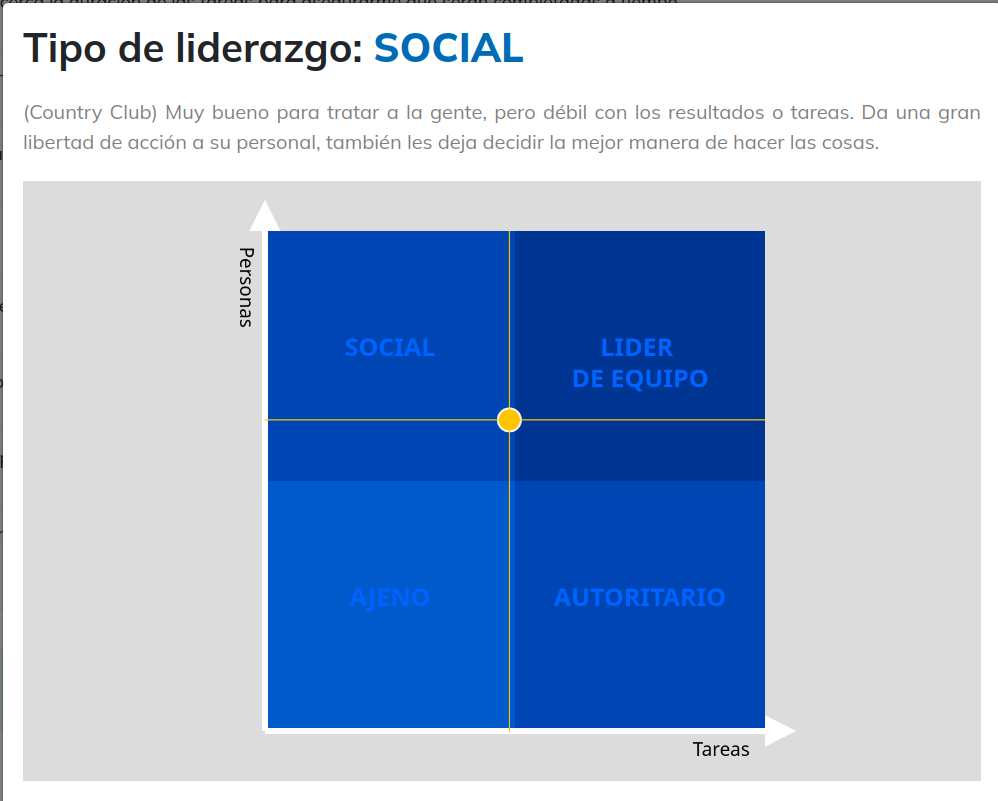

Tests on Leadership Styles
I took two tests to understand my leadership profile: the Blake & Mouton test and the Situational Leadership test. These were my results.
On Blake & Mouton: my result was Social (Country Club). This style is very good at dealing with people but weak on results and tasks. It gives staff a lot of freedom and lets them decide the best way to do things. However, as can be drawn from the image, I'm in the middle, not at the center of it.

On Situational Leadership:
| Style | Preference score |
|---|---|
| Directing | 2 |
| Persuading | 2 |
| Participating | 5 |
| Delegating | 3 |
My predominant style is Participating: I tend to involve people, listen to their opinions and build decisions together. My secondary style combines directing and delegating depending on the situation.
Reflection: both tests point in the same direction. I care about the people on the team and I prefer building consensus over imposing decisions. The weak side is the one Blake & Mouton names: concern for results and deadlines. In team projects I should practice setting clear goals and checking progress, without losing the collaborative approach.